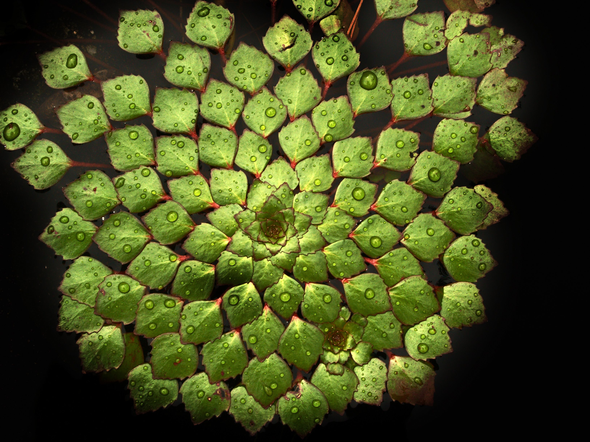
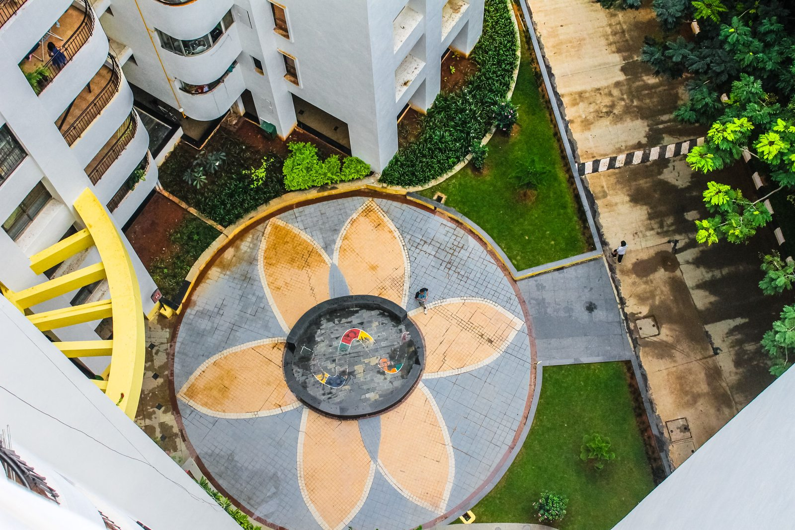
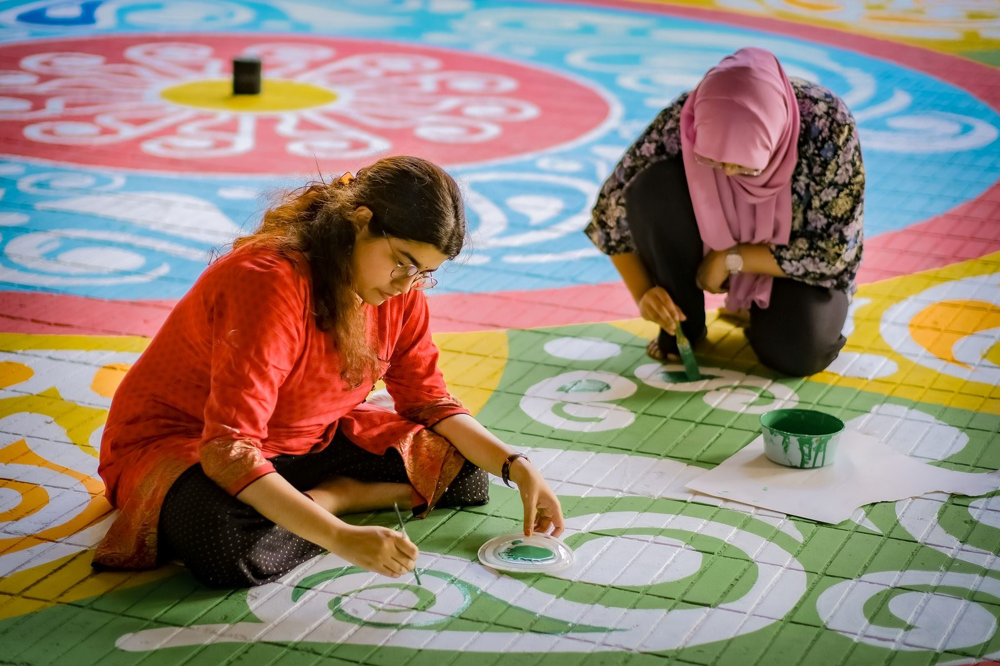

Begin with one simple pattern. Give yourself time to enjoy the making.

Our storyKeeping a beautiful tradition close.
A thoughtful approach to Rangoli and Kolam, made for the homes and celebrations of today.

A small idea with meaningBeauty at
Beauty at
the threshold.
Kolam House explores one thoughtful idea: traditional floor art deserves a place in modern everyday life.
A stencil does not replace the craft or the people who keep it alive. It offers a gentle entry point—an invitation to try a pattern, learn its context and make time for creativity.
Our philosophy
Thoughtful in every direction.
A clear purpose, a considered design process and space for creativity.
01
Our mission
Make exploring Rangoli and Kolam patterns approachable while respecting the traditions that inspire them.
02
Our vision
A home where meaningful craft feels welcome, and more people feel confident to create.
03
Our approach
Consider proportion, cuttable detail, ease of use and the space where each pattern will live.
Many traditions. Many expressions.Learn the story
Learn the story
behind the lines.
Kolam, often associated with Tamil households, includes dot-based patterns, interlaced lines and layered forms. Rangoli encompasses varied regional floor-art practices across India.
Chaitrangan and flower-based pookalam have their own contexts. We keep these distinctions visible rather than treating every pattern as interchangeable.
Explore our cultural journal
Craftsmanship
An idea becomes a pattern.
A practical process for thoughtful stencil design.
01
Share your idea
Tell us about your motif, size, script and occasion. A reference image can help.
02
Refine the design
Discuss artwork, material and dimensions with your maker before confirming a quote.
03
Make it yours
After approval, agree on production and delivery details directly with the business.
The reusable philosophy
Made to be used, then used again.
Store reusable stencils carefully and choose a material suited to your space.
01
Consider the material
Wood and MDF designs have different finishes and care needs. Confirm suitability with your maker.
02
Look after the details
Brush away dry powder, avoid soaking and protect fine cut-outs when storing.
03
Create your own rhythm
Try a pattern regularly, change the colours and keep learning. Reuse is a habit, not a certification.
Meet the makers
The people behind the pattern.
Discover the details that help a pattern take shape.
01
Pattern designer
Explore proportion, meaningful motifs and artwork that translates into a clear stencil pattern.
02
Stencil maker
Consider materials, dimensions and finishing details that help a design work in its intended space.
03
Customer guide
Bring together a clear idea, accurate measurements and the details needed for a thoughtful design enquiry.
The creative journey
A journey you can make your own.
From inspiration to a pattern you can make your own.
01
The inspiration
Begin with a motif, a traditional practice or a moment you want to celebrate.
02
The first collection
Explore size, proportion and detail until the pattern suits your space and pace.
03
What comes next
Keep learning, try a new variation and make room for the next beautiful beginning.
Creative inspiration
Small rituals, lasting inspiration.
Simple ideas for bringing a thoughtful creative ritual home.
Let a meaningful motif bring a little creativity to a gathering.
A gentle first attempt can be the beginning of a beautiful daily ritual.
A pattern that feels like you.
A name, a memory, a celebration. Let’s turn your idea into a thoughtfully designed custom stencil.
Let’s Create Together